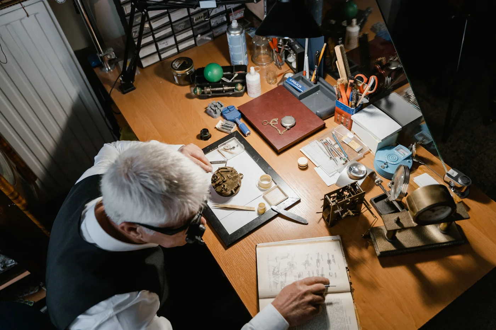

In roughly nine minutes, a wristwatch with no diamonds, no famous crown on the dial, and a production run you could almost count on two hands went from a one-million-dollar estimate to $13.9 million. The room at Phillips New York knew what it was watching — not just a sale, but a coronation. It was the most money ever paid at auction for a watch made by an independent watchmaker; more, in fact, than any watch made this century. The name on the dial was F.P. Journe. And most people outside the watch world have never heard it.
This is the Chronomètre à Résonance, and it is the second entry in The Object of Desire — our series on the watches whose story outgrew the metal. The Cartier Crash sold on a myth. This one sold on something rarer, and harder to fake: pure genius, and the quiet man who made it.

The Record
On 13 June 2026, at The New York Watch Auction: XIV, an F.P. Journe Chronomètre à Résonance — the “Souscription, No. 007”, in platinum and pink gold — hammered all-in at $13,922,000. It carried a pre-sale estimate of merely “in excess of $1,000,000.” It sold for roughly fourteen times that.
The result set three world records at once: for F.P. Journe, for any watch by an independent watchmaker, and for any 21st-century watch sold at commercial auction. For years, the ceiling for an independent was Philippe Dufour’s Grande et Petite Sonnerie at $5.7 million in 2023; the Journe cleared more than twice that. One honest caveat the headlines skip: this is not the most expensive watch ever. Paul Newman’s own Rolex Daytona, at $17.7 million in 2017, still holds that throne. But nothing else in the room that night came within eight million dollars of the Journe.
Who Is F.P. Journe
François-Paul Journe is, by wide agreement, the greatest living independent watchmaker. He is not a corporation with a marketing department; he is a man in Geneva who makes only around 900 watches a year, and who signs every dial with two Latin words: Invenit et Fecit — “invented and made.” He means it literally. He designs the movements and he builds them, a claim almost no other name in watchmaking can honestly make.
“Souscription” is where the premium truly lives. To finance his fledgling workshop at the turn of the millennium, Journe offered the very first twenty Résonances to the clients who believed in him early — paid for in advance, by subscription. That money literally built the company. No. 007 is one of those twenty founding pieces, and the specific example that sold is believed to be one of only two of its exact configuration ever made — the other kept by Journe himself. In practice, it was the only one a collector could ever own. That confluence made it, as the trade put it, the one.
Why the Résonance
The watch is named for a piece of physics. Two independent balance wheels are mounted side by side, close enough that their oscillations begin to synchronise on their own — each steadying the other through the natural phenomenon of resonance. The result is better accuracy achieved by physics rather than by adjustment. It is an idea watchmakers had chased since the 18th century, when Abraham-Louis Breguet toyed with it in pocket watches. Journe is the one who made it work, repeatably, on a wrist.
That is why the Résonance, more than any of his other creations, is his signature — the purest expression of a mind that treats a watch not as jewellery but as an argument. You are not buying a logo. You are buying an idea that only one person ever solved.
A steel Rolex tells the room you have money. An F.P. Journe tells the few who know that you have taste — and the patience to wait for genius.
The Object of Desire · No. 002Why the Billionaires Are Buying
Step back and the $13.9 million makes a different kind of sense. The very top of watch collecting has moved. For years the grails were the big-brand icons — the steel Patek Nautilus, the Audemars Piguet Royal Oak, the Rolex Daytona. But when enough money can buy any of those, the real flex becomes the thing almost no one can get: a watch made by a single mind, in tiny numbers, that money alone can’t summon.
So the records are tumbling across the independents. Journe at $13.9 million; a Rexhep Rexhepi at nearly $3.9 million; fresh highs for Philippe Dufour, Kari Voutilainen and Roger Smith. A new kind of buyer is driving it, too — tech wealth, with Mark Zuckerberg among the visible F.P. Journe collectors. It is the quiet-luxury turn, applied to horology: the loudest thing you can now own is the one no one else recognises.
The Object of Desire
This is why the Résonance belongs in the series. The Cartier Crash sold on a myth; the Journe sells on a mind. But both prove the same thing Stories To Watch was built on: the object and its story are inseparable, and the story is often the more valuable half. A Journe carries no glamour of a tragic accident. It carries something better — the romance of one obsessive who reinvented how a watch keeps time, and asked you to be patient enough to notice.
That is the object of desire. Not the flashiest watch, or the most expensive. The one you can’t stop thinking about — the one that makes you say I didn’t know that, and then I need to know more.
F.P. Journe — Your Questions
How much did the F.P. Journe Résonance sell for?
$13,922,000, at Phillips New York on 13 June 2026 — the Chronomètre à Résonance “Souscription No. 007.” It set a world record for any independent watchmaker and for any 21st-century watch sold at commercial auction, at roughly fourteen times its pre-sale estimate.
Is it the most expensive watch ever sold?
No. It is the most expensive watch by an independent watchmaker and the most expensive 21st-century watch, but the all-time auction record still belongs to Paul Newman’s own Rolex Daytona, which sold for $17.7 million in 2017.
What is the Chronomètre à Résonance?
F.P. Journe’s most emblematic watch. It uses two independent balance wheels placed side by side, which naturally synchronise their oscillations through the physics of resonance — steadying each other and improving accuracy by physics rather than adjustment. It is watchmaking as pure idea.
Why is F.P. Journe so collectible?
François-Paul Journe is widely regarded as the greatest living independent watchmaker. He produces only around 900 watches a year and signs each dial Invenit et Fecit — Latin for “invented and made.” The earliest “Souscription” pieces, funded by clients who backed him at the turn of the millennium, are the rarest and most sought-after of all.
Why is F.P. Journe so expensive?
Scarcity and hand-work. Journe makes only around 900 watches a year, designs and builds his own movements, and finishes each piece by hand — so demand vastly outstrips supply. The rarest references, like the early “Souscription” pieces, then command enormous premiums on the secondary market.
Can you still buy an F.P. Journe?
Yes, though never easily. New pieces are allocation-gated through boutiques, and the most desirable references trade well above retail on the secondary market. It is exactly the kind of hard-to-find, independent watch a sourcing concierge exists to track down.
The Honest Takeaway
You will never own Souscription No. 007 — almost no one will, and we won’t pretend otherwise. But the lesson under the number is the useful part: the frontier of watchmaking — and of value — has quietly moved to the independents, the small makers doing the most original work in the craft. The big brands still make the headlines. The independents increasingly make the history.
If that’s where your curiosity is pulling you, it’s a door worth opening properly — because these are exactly the pieces you can’t just walk in and buy.
The Independents · The Object of Desire
A name like this is found, not browsed
Independents like F.P. Journe almost never sit in a case waiting for you — they move quietly through a network. If you’re chasing one, don’t chase it alone. Tell us the piece, and we’ll work our verified dealers to find it.
The Object of Desire
The independents are where the story is now — and where value is heading
Independent stories · Real market prices · Verified dealers